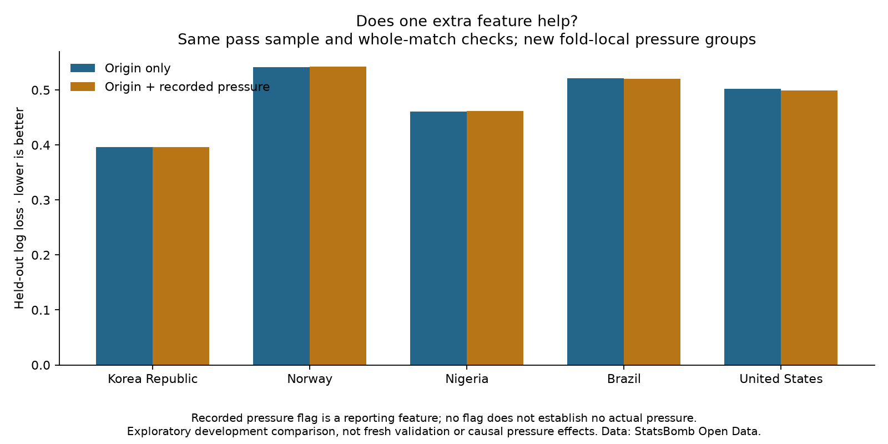

Football analyst training · Phase 3 · Lesson 50
Does more information improve the model?
A feature is information the model uses. Our original model uses the starting box. The candidate also uses whether the pass was recorded as under pressure.
Completed assignment
Compare both models on the same 3,430 passes with the same five whole-match checks. Each model learns only from the four fitting matches.
- Starting zone only: log loss 0.480395.
- Starting zone plus recorded pressure: 0.479978.

How we used the extra information
Inside each starting box, split training passes into flagged and not-flagged groups. Count completions and attempts, then smooth each group toward the starting-box estimate. This avoids treating a tiny subgroup as certain.
“Not flagged” does not prove there was no pressure. We use recorded event annotations, not a verified live observation before a pass.
What you should understand
Add a feature, evaluate on the same held-out observations, and report the result even when it barely changes. A plausible football idea still needs evidence.
Run 50_pass_completion_pressure_feature.py in Spyder. The worked assignment is complete with assistance; ask for more detail about features or smoothing if needed.